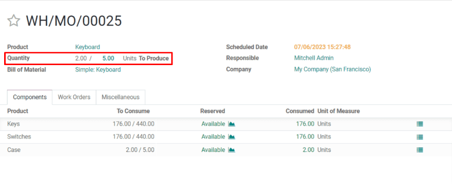
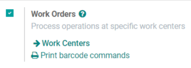
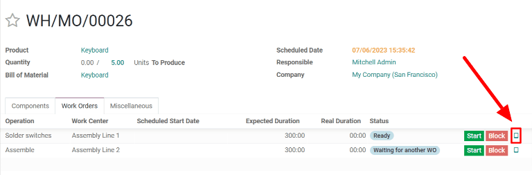

Manufacturing backorders¶
In some cases, the full quantity of a manufacturing order cannot be produced immediately. When this happens, Odoo Manufacturing allows for the manufacturing of partial quantities of the order and creates a backorder for the remaining amount.
In the Manufacturing app, creating a backorder splits the original manufacturing order into two orders. The reference tag for each order is the tag used for the original order, followed by a hyphen and then an additional number to indicate that it’s a backorder.
Example
A company creates a manufacturing order with the reference tag WH/MO/00175, for 10 units of Product X. After starting work on the manufacturing order, the employee working the production line realizes there are only enough components in stock to produce five units of the product.
Instead of waiting for additional stock of the components, they manufacture five units and create a backorder for the remaining five. This splits the manufacturing order into two separate orders: WH/MO/00175-001 and WH/MO/00175-002.
Order 001 contains the five units that have been manufactured, and is immediately marked as Done. Order 002 contains the five units that still need to be manufactured and is marked as In Progress. Once the remaining components are available, the employee returns to order 002 and manufactures the remaining units before closing the order.
Create a manufacturing backorder¶
To create a backorder for part of a manufacturing order, begin by navigating to . Select a manufacturing order with a quantity of two or more or create one by clicking Create.
If a new manufacturing order is created, select a product from the Product drop-down menu and enter a quantity of two or more in the Quantity field, then click Confirm to confirm the order.
After manufacturing the quantity that is being produced immediately, enter that number in the Quantity field at the top of the manufacturing order.
Next, click Validate, and a You produced less than initial demand pop-up window appears, from which a backorder can be created. Click Create Backorder to split the manufacturing order into two separate orders, with the reference tags WH/MO/XXXXX-001 and WH/MO/XXXXX-002.

Order 001 contains the items that have been manufactured, and is closed immediately. Order 002 is the backorder that contains the items that have yet to be manufactured, and remains open, to be completed at a later date.
Once the remaining units can be manufactured, navigate to , and then select the backorder manufacturing order. If all of the remaining units are manufactured immediately, simply click Validate to close the order.
If only some of the remaining units are manufactured immediately, create another backorder for the remainder by following the steps detailed in this section.
Create a backorder from tablet view¶
Backorders for manufacturing orders can also be created from the work order tablet view.
Note
In order to use tablet view, the Work Orders setting must be enabled. To enable it, navigate to . On the Settings page, enable the checkbox next to Work Orders, then click Save to save the change. This makes the Work Orders tab appear on manufacturing orders, from which the tablet view can be opened.
To create a backorder from the tablet view, begin by navigating to . Select a manufacturing order with a quantity of two or more or create one by clicking Create.
If a new manufacturing order is created, select a product from the Product drop-down menu and enter a quantity of two or more in the Quantity field, then click Confirm to confirm the order.
After confirming the manufacturing order, select the Work Orders tab and click the üì± (tablet view) button located on the line of the first work order to enter the tablet view.
Once in tablet view, enter the quantity being manufactured immediately in the Units field at the top left of the tablet view.

The steps for the rest of the workflow depend on whether the manufacturing order being processed requires the completion of a single work order or multiple work orders.
Single work order¶
If the manufacturing order only requires the completion of a single work order, complete the work order, then click Mark As Done And Close MO. The manufacturing order is closed and a backorder for the units that still need to be manufactured is created automatically.

Once the remaining units are ready to be manufactured, navigate to , then select the backorder manufacturing order, which is titled using the reference tag of the original backorder with 002 added to the end.
On the backorder manufacturing order, select the Work Orders tab and click the üì± (tablet view) button located on the line of the work order to open the tablet view. If all of the units in the backorder will be completed immediately, simply click Mark As Done And Close MO after completing the work order.
If only some of the remaining units will be manufactured immediately, enter the number in the Units field at the top left of the tablet view, then click Mark As Done And Close MO to create another backorder for the remaining units. The new backorder can be processed using the steps detailed in this section.
Multiple work orders¶
If the manufacturing order requires the completion of multiple work orders, complete the first work order, and then click Record Production. This splits the manufacturing order into two separate orders, titled WH/MO/XXXXX-001 and WH/MO/XXXXX-002, with XXXXX being the number of the original order.

The tablet view defaults to showing the first work order for the 002 manufacturing order. Since this manufacturing order will not be completed immediately, back out of tablet view by clicking the ⬅️ (back) button twice. Doing so will take you to the 001 order.
To finish the 001 order, select the Work Orders tab and click the tablet view button located on the line of the next work order. Finally, complete the remaining work orders, then click Mark As Done And Close MO to close the manufacturing order.
Once the remaining units are ready to be manufactured, navigate to , then select the 002 order. Select the Work Orders tab and click the tablet view button located on the line of the first work order.
If all of the units in the backorder will be completed immediately, simply click Mark As Done And Close MO after completing all of the work orders.
If only some of the remaining units will be manufactured immediately, enter the number in the Units field at the top left of the tablet view, then click Record Production to create an additional backorder for the remaining units, with 003 at the end of its reference tag.
The 002 backorder and 003 backorder can be completed by following the steps detailed in this section.
Tip
It is also possible to create a backorder in the middle of a manufacturing order, when some but not all of the work orders have already been completed. Doing so marks the completed work order(s) as Finished on the backorder.
Example
A manufacturing order for four chairs requires the completion of two work orders: Paint and Assemble. While the paint step can be completed immediately for all four chairs, there are only enough screws to assemble two of them.
As a result, the employee responsible for producing the chairs begins by painting all four, and marking the Paint work order as Finished for all of them. Then, they move on to the Assemble work order. They assemble two of the four chairs, enter that number in the Units field of the tablet view, and click Record Production.
A backorder manufacturing order is created for the remaining two chairs. On the backorder, the Paint work order is already marked as Finished, and only the Assemble work order is left to be completed.
Once more screws are available, the manufacturing employee assembles the remaining chairs and clicks Mark As Done And Close MO to complete the Assemble work order and close the backorder manufacturing order.